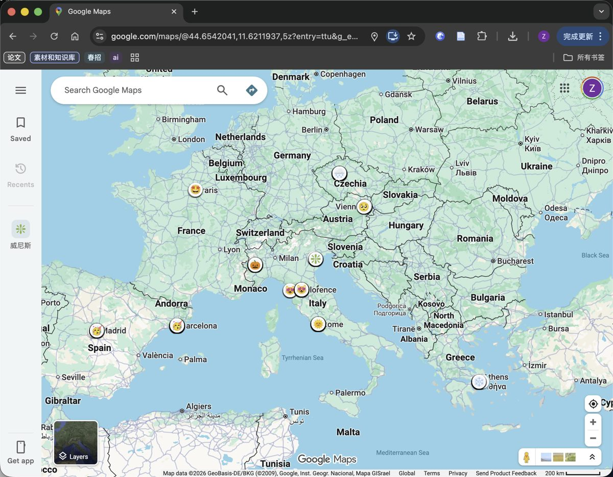
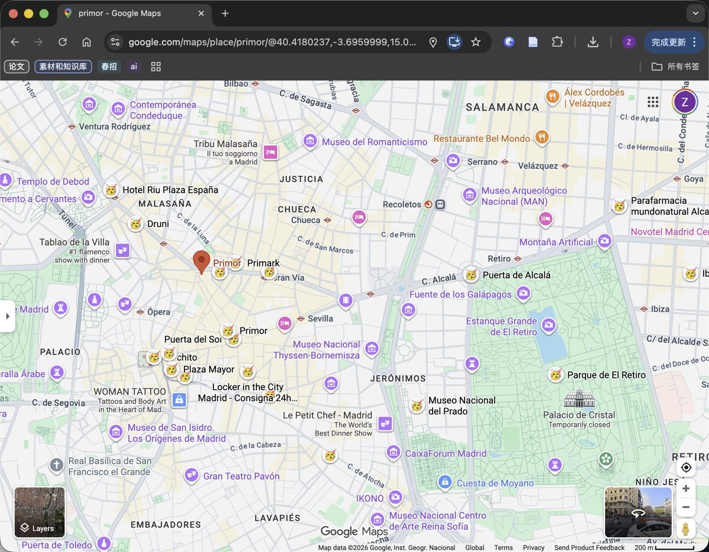
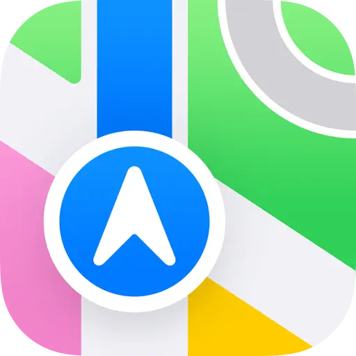
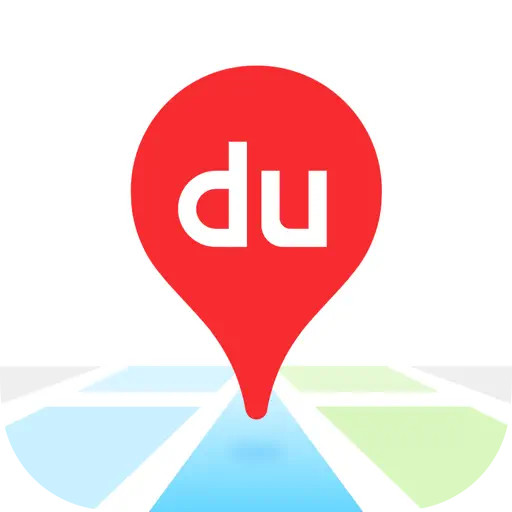
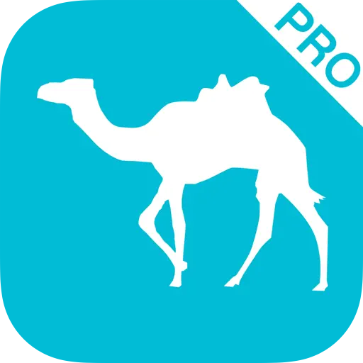
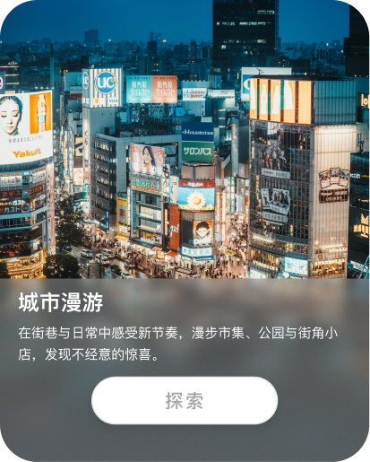
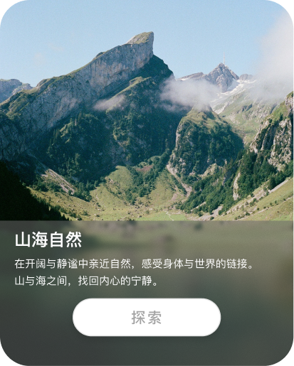
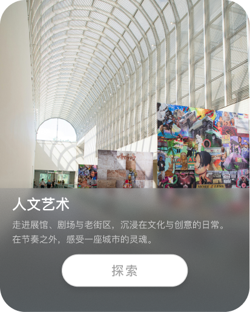

Personal project
Moodie
从体验出发的智能旅行规划 App —— 从"我想去哪"，到"我想感受什么"。
从"我想去哪"到"我想感受什么"
一套体验标签系统，替代地名搜索框
Moodie 轻介入式 AI，决定去哪的那一步交给它
从选点到成行程，一键闭环
01 · Background
从一段旅程的执念，到一个关于"感受"的追问
在欧洲的半年里，我去了8个国家、14个城市。旅途中总会有一些瞬间——找到了那个城市最好看的日落，钻进一个能看到雪山的图书馆待了一下午，或者在挪威第一次坐上狗拉雪橇——会让人觉得，这一刻的"感觉"就是旅行的意义。
但这些体验很难提前规划——现有的工具只能按地点搜，没有办法告诉我"哪里可以看峡湾地貌"、"这个城市哪里最适合发呆"。每次想找这些，都要自己在不同平台反复碰运气。
比起"我想去哪"，也许"我想感受什么"才是一趟旅程最初的起点。


Google map 中我的旅行收藏夹
02 · Question
现有工具的起点，从一开始就错了
当我最近精力疲惫，想要通过轻松的夏日感旅行充电……没有任何工具支持这种搜索。现有旅行规划的起点往往，只能输入一个地名，反复多平台比对，最后艰难的筛选。
因此，我希望能改变这个现状——从一开始就直观的检索"我想感受什么"，最大程度上降低决策成本。
点击卡片 · 查看对应的设计方向
03 · Insight
70% 的人想换个地方换心情，却先被规划本身劝退
User Research · 调研发现
超过70%受访者旅行的核心动机是"换个地方换心情"——本质上是一种情绪需求。更值得注意的是：繁琐的规划流程本身会直接劝退出行——很多人不是不想旅行，而是被规划这件事消耗掉了动力。
调研覆盖受访者的年龄结构、旅行频率、规划习惯与出行动机四方面。
72.73%
旅行动机是"换个地方，换心情"
81.82%
觉得自己旅游得不够
68.18%
没去旅行，是因为觉得规划太麻烦、没时间
90%+
规划要在小红书、地图等多个 App 间来回切换
这意味着，一个从"体验出发"的规划工具，不只是让旅行更好，而是让旅行真正发生。
User Map · 旅程验证
传统的旅行规划：出发之前就已经疲惫
产生旅游想法
决定目的地
交通及住宿
整理具体行程
旅行中
- 基于用户期待的场景推荐，提升兴趣
- 支持导入链接，一键打点，解决繁琐的平台切换
Market Analysis · 市场空白
市面上很多 App，为什么旅行规划还是很复杂？
可编辑功能
与感受相关
落地成行程
—— 空白



与地点相关
编辑受限
当前与旅行相关的 App 多集中在单一功能点上：现有工具要么帮你找感受（小红书、抖音），要么帮你规划地点（地图、攻略类）——但没有一款能把两件事同时做到。
"从感受出发、落地成行程"这个位置，目前是空白的。
Conclusion
根据优化后的流程，我设计了两套标签系统作为核心功能，这两套系统作为 Moodie（人工智能助手）推荐目的地的逻辑，形成整个旅行规划期间"感受出发"的闭环。
-
01
根据体验推荐选择地点



-
02
AI 一键规划
让Moodie来帮忙吧...
 Moodie，帮我生成路线
Moodie，帮我生成路线 -
03
出发


🚌 30min
04 · Product
把"决定去哪"这一步，交给一个更懂你的搭子
-
01
Flow 1 · 体验搜索
Moodie 直接完成最难的一步——决定去哪，并告诉你这趟旅程大概会有什么体验。三亚海风轻柔、大理洱海环绕，标签一键匹配。
-
02
Flow 2 · Moodie 智能助手
以轻介入的姿态存在。点位导入体验标签系统后自动切换图标，右下角一键切换"开始规划行程"或"只是看看周边"。
-
03
Flow 3 · 行程规划链路
一键生成，即刻出发。罗马斗兽场 → 许愿池 → 苹丘观景点，随时随地轻松规划。